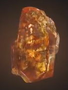

| Name |
Color |
Powers and capabilities |
Image |
| Soul |
Orange |
According to Wong's ancient texts, the Soul Stone could prove to be the greatest threat out of all the Infinity Stones.[18] Gamora knew of the location of the Soul Stone from a map she found to its whereabouts (which she burnt) but kept this a secret from Thanos. |
 |
| Time |
Green |
According to Wong's ancient texts, the Soul Stone could prove to be the greatest threat out of all the Infinity Stones.[18] Gamora knew of the location of the Soul Stone from a map she found to its whereabouts (which she burnt) but kept this a secret from Thanos. |
 |
| Space |
Blue |
According to Wong's ancient texts, the Soul Stone could prove to be the greatest threat out of all the Infinity Stones.[18] Gamora knew of the location of the Soul Stone from a map she found to its whereabouts (which she burnt) but kept this a secret from Thanos. |
 |
| Mind |
Yellow |
According to Wong's ancient texts, the Soul Stone could prove to be the greatest threat out of all the Infinity Stones.[18] Gamora knew of the location of the Soul Stone from a map she found to its whereabouts (which she burnt) but kept this a secret from Thanos. |
 |
| Reality |
Red |
According to Wong's ancient texts, the Soul Stone could prove to be the greatest threat out of all the Infinity Stones.[18] Gamora knew of the location of the Soul Stone from a map she found to its whereabouts (which she burnt) but kept this a secret from Thanos. |
 |
| Power |
Purple |
According to Wong's ancient texts, the Soul Stone could prove to be the greatest threat out of all the Infinity Stones.[18] Gamora knew of the location of the Soul Stone from a map she found to its whereabouts (which she burnt) but kept this a secret from Thanos. |
 |
|
marvelcinematicuniverse.fandom.com/wiki/Infinity_Stones |